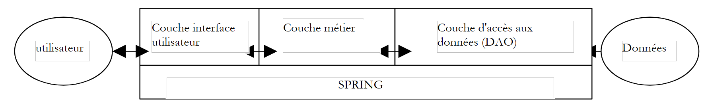
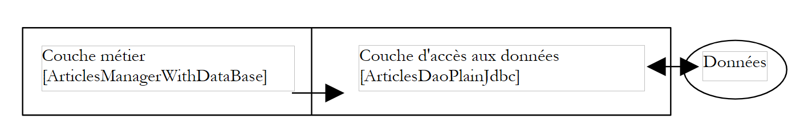
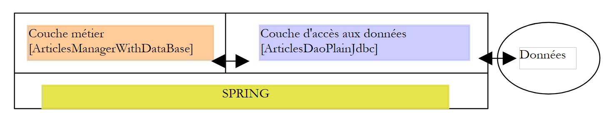
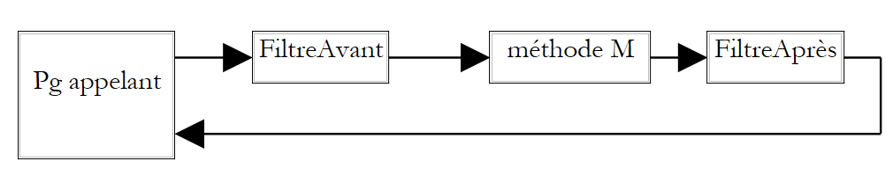
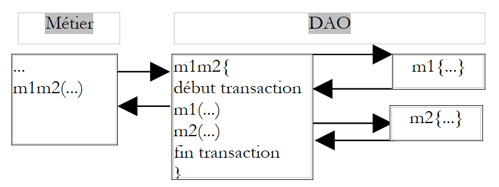
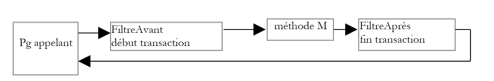

2. Artigo 1 - Spring IoC
Objetivos do documento:
- descobrir as possibilidades de configuração e integração do framework Spring (http://www.springframework.org)
- definir e utilizar o conceito de IoC (Inversão de Controlo), também designado por injeção de dependências (Dependency Injection)
2.1. Configurar uma aplicação de 3 camadas com o Spring
Consideremos uma aplicação clássica de 3 camadas:
 |
Partiremos do princípio de que o acesso às camadas de negócio e DAO é controlado por interfaces Java:
- a interface [IArticlesDao] para a camada de acesso aos dados
- a interface [IArticlesManager] para a camada de negócios
Na camada de acesso aos dados, ou camada DAO (Data Access Object), é frequente trabalhar com um SGBD e, por conseguinte, com um controlador JDBC. Consideremos o esboço de uma classe que acede a uma tabela de artigos num SGBD:
Para realizar uma operação no SGBD, qualquer método necessita de um objeto [Connection] que represente a ligação à base de dados, através da qual transitarão as trocas de dados entre esta e o código Java. Para construir este objeto, são necessárias quatro informações:
o nome da classe do controlador JDBC do SGBD | |
a URL JDBC da base de dados a utilizar | |
a identidade com a qual se estabelece a ligação | |
a palavra-passe dessa identidade |
Como é que a nossa classe anterior [ArticlesDaoPlainJdbc] pode obter estas informações? Existem várias possibilidades:
solução 1 — as informações estão codificadas de forma estática na classe:
A desvantagem desta solução é que é necessário alterar o código Java sempre que se verifique uma alteração nestas informações, por exemplo, a alteração da palavra-passe.
Solução 2 — as informações são transmitidas ao objeto durante a sua criação:
Aqui, o objeto recebe, aquando da sua construção, as informações de que necessita para funcionar. O problema passa então para o código que lhe transmitiu as quatro informações. Como é que as obteve? A seguinte classe [ArticlesManagerWithDataBase] da camada de negócio poderia construir um objeto [ArticlesDaoPlainJdbc] da camada de acesso aos dados:
 |
Vemos que, mais uma vez, as informações necessárias para a construção do objeto [ArticlesDaoPlainJdbc] são fornecidas ao construtor do objeto [ArticlesManagerWithDataBase]. Podemos imaginar que estas lhe são transmitidas por uma camada superior, como a camada de interface com o utilizador. Chega-se assim, passo a passo, à camada mais elevada da aplicação. Devido à sua posição, esta não é chamada por uma camada que lhe possa transmitir as informações de configuração de que necessita. É, portanto, necessário encontrar uma solução alternativa à configuração por construtor. A solução habitual para configurar uma aplicação ao nível da sua camada mais elevada consiste na utilização de um ficheiro onde se encontram todas as informações suscetíveis de sofrer alterações ao longo do tempo. Podem existir vários ficheiros deste tipo. No arranque da aplicação, uma camada de inicialização irá então criar a totalidade ou parte dos objetos necessários às diferentes camadas da aplicação.
Existe uma grande variedade de ficheiros de configuração. A tendência atual é utilizar ficheiros XML. Esta é a opção adotada pelo Spring. O ficheiro que configura um objeto [ArticlesDaoPlainJdbc] poderia ser o seguinte:
Uma aplicação é um conjunto de objetos que o Spring denomina «beans», porque seguem a norma JavaBean de nomenclatura dos acessadores e inicializadores (getters/setters) dos campos privados de um objeto. Os objetos que, numa aplicação, têm como função prestar um serviço são frequentemente criados numa única instância. Chamam-se singletons. Assim, no nosso exemplo de aplicação multicamadas aqui analisado, o acesso à base de dados de artigos será assegurado por uma única instância da classe [ArticlesDaoPlainJdbc]. Numa aplicação web, estes objetos de serviço atendem vários clientes ao mesmo tempo. Não se cria um objeto de serviço por cliente.
O ficheiro de configuração do Spring acima permite criar um único objeto de serviço do tipo [ArticlesDaoPlainJdbc] num pacote denominado [istia.st.articles.dao]. As quatro informações necessárias ao construtor deste objeto estão definidas dentro de uma baliza <bean>...</bean>. Haverá tantas balizas <bean> quantos os singletons a construir.
Em que momento ocorre a criação dos objetos definidos no ficheiro Spring? A inicialização de uma aplicação pode ser atribuída ao método main dessa mesma aplicação, caso esta o possua. No caso de uma aplicação web, pode ser o método [init] do servlet principal. Em qualquer aplicação, existe um método que é garantidamente o primeiro a ser executado. É geralmente nesse método que ocorre a criação dos singletons.
Vejamos um exemplo. Suponhamos que se pretenda testar a classe [ArticlesDaoPlainJdbc] acima referida, utilizando um teste JUnit. Uma classe de teste JUnit possui um método [setUp] que é executado antes de qualquer outro método. É aí que se criará o singleton [ArticlesDaoPlainJdbc].
Se seguirmos a solução de passar as informações de configuração através do construtor, teremos a seguinte classe de teste:
A classe de chamada [TestArticlesPlainJdbc] deve conhecer as quatro informações necessárias para a inicialização do singleton [ArticlesDaoPlainJdbc] a ser construído.
Se seguirmos a solução de passagem das informações de configuração por ficheiro de configuração, poderíamos ter a seguinte classe de teste utilizando o ficheiro Spring descrito acima.
Aqui, a classe de chamada [TestSpringArticlesPlainJdbc] não precisa de conhecer as informações necessárias para a inicialização do singleton a ser criado. Precisa apenas de conhecer:
- [springArticlesPlainJdbc.xml]: o nome do ficheiro de configuração Spring descrito acima
- [articlesDao]: o nome do singleton a criar
Uma alteração no ficheiro de configuração, fora destas duas entidades, não tem qualquer impacto no código Java. Este método de configuração dos objetos de uma aplicação é muito flexível. Para se configurar, a aplicação só precisa de saber duas coisas:
- o nome do ficheiro Spring que contém a definição dos singletons a construir
- os nomes desses singletons, que servem ao código Java para obter uma referência aos objetos aos quais foram associados através do ficheiro de configuração
2.2. Injeção de dependências e inversão de controlo
Vamos agora introduzir o conceito de injeção de dependências (Dependency Injection) utilizado pelo Spring para configurar as aplicações. Também se utiliza o termo inversão de controlo (IoC, Inversion of Control). Consideremos a criação do singleton [ArticlesManagerWithDataBase] da camada de negócio da nossa aplicação:
 |
Para aceder aos dados do SGBD, a camada de negócio deve utilizar os serviços de um objeto que implemente a interface [IArticlesDao], por exemplo, um objeto do tipo [ArticlesDaoPlainJdbc]. O código da classe [ArticlesManagerWithDataBase] poderia ser semelhante ao seguinte:
public class ArticlesManagerWithDataBase implements IArticlesManager {
// uma instância de acesso aos dados
private IArticlesDao articlesDao;
....
public ArticlesManagerWithDataBase (String driverClassName, String url, String user, String pwd, ...) {
...
// criação do serviço de acesso aos dados
articlesDao =(IArticlesDao)new ArticlesDaoPlainJdbc(driverClassName,url,user,pwd);
...
}
public ... doSomething(...){
...
}
}
A classe [ArticlesDaoPlainJdbc] deve, neste caso, implementar uma interface [IArticlesDao]:
Para criar o singleton do tipo [IArticlesDao] necessário ao funcionamento da classe, o construtor desta utiliza explicitamente o nome da classe de implementação da interface [IArticlesDao]:
Temos, portanto, uma dependência rígida no código em relação ao nome da classe. Se a classe de implementação da interface [IArticlesDao] viesse a mudar, o código do construtor anterior teria de ser alterado. Temos as seguintes relações entre os objetos:
 |
A classe [ArticlesManagerWithDataBase] toma ela própria a iniciativa de criar o objeto [ArticlesDaoPlainJdbc] de que necessita. Voltando ao termo «inversão de controlo», dir-se-á que é ela que tem o «controlo» para criar o objeto de que necessita.
Se tivéssemos de escrever uma classe de teste JUnit para a classe [ArticlesManagerWithDataBase], poderíamos ter algo semelhante ao seguinte:
A classe de teste cria uma instância da classe de negócio [ArticlesManagerWithDataBase], que, por sua vez, cria, no seu construtor, uma instância da classe de acesso aos dados [ArticlesDaoPlainJdbc].
A solução com o Spring eliminará a necessidade de a classe de negócio [ArticlesManagerWithDataBase] conhecer o nome [ArticlesDaoPlainJdbc] da classe de acesso aos dados de que necessita. Isto permitirá alterá-la sem alterar o código Java da classe de negócio. O Spring permitirá criar simultaneamente os dois singletons: o da camada de acesso aos dados e o da camada de negócios. O ficheiro de configuração do Spring definirá um novo bean:
A novidade reside no bean que define o singleton da classe de negócio a criar:
<bean id="articlesManager" class="istia.st.articles.domain.ArticlesManagerWithDataBase">
<property name="articlesDao">
<ref bean="articlesDao"/>
</property>
</bean>
- A classe que implementa o bean [articlesManager] é definida: [ArticlesManagerWithDataBase]
- o campo [articlesDao] do bean recebe um valor através da baliza <property name="articlesDao">. Trata-se do campo definido na classe [ArticlesManagerWithDataBase]:
Para que o campo [articlesDao] possa ser inicializado pelo Spring e pela sua baliza <property>, é necessário que o campo siga a norma JavaBean e que exista um método [setArticlesDao] para inicializar o campo [articlesDao]. Deve-se notar que o nome do método é derivado de forma muito precisa do nome do campo. Paralelamente, existe frequentemente um método [get...] para obter o valor do campo. Neste caso, trata-se do método [getArticlesDao]. Nesta nova versão, a classe [ArticlesManagerWithDataBase] já não possui um construtor. Já não precisa dele.
- O valor que será atribuído ao campo [articlesDao] pelo Spring é o do bean [articlesDao] definido no seu ficheiro de configuração:
<bean id="articlesManager" class="istia.st.articles.domain.ArticlesManagerWithDataBase">
<property name="articlesDao">
<ref bean="articlesDao"/>
</property>
</bean>
<bean id="articlesDao" class="istia.st.articles.dao.ArticlesDaoPlainJdbc">
<constructor-arg index="0">
.............
</bean>
- quando o Spring criar o singleton [ArticlesManagerWithDataBase], terá de criar também o singleton [ArticlesDaoPlainJdbc]:
- O Spring irá estabelecer um gráfico de dependências dos beans e verificará que o bean [articlesManager] depende do bean [articlesDao]
- irá criar o bean [articlesDao], ou seja, um objeto do tipo [ArticlesDaoPlainJdbc]
- depois, criará o bean [articlesManager] do tipo [ArticlesManagerWithDataBase]
Imaginemos agora um teste JUnit para a classe [ArticlesManagerWithDataBase]. Poderia ser semelhante ao seguinte:
Vamos acompanhar o processo de criação dos dois singletons definidos no ficheiro Spring denominado [springArticlesManagerWithDataBase.xml].
- O método [setUp] acima solicita uma referência ao bean denominado [articlesManager]
- O Spring consulta o seu ficheiro de configuração e encontra o bean [articlesManager]. Se este já estiver criado, limita-se a devolver uma referência ao objeto (singleton); caso contrário, cria-o.
- O Spring deteta a dependência do bean [articlesManager] em relação ao bean [articlesDao]. Assim, cria o singleton [articlesDao] do tipo [ArticlesDaoPlainJdbc], caso este ainda não tenha sido criado (singleton).
- Cria o singleton [articlesManager] do tipo [ArticlesManagerWithDataBase]
Este mecanismo poderia ser esquematizado da seguinte forma:
 |
Recorde-se a estrutura da classe [ArticlesManagerWithDataBase]:
No final da construção dos singletons pelo Spring, temos um objeto do tipo [ArticlesManagerWithDataBase] cujo campo [articlesDao] foi inicializado sem que ele saiba como. Diz-se que foi injetada uma dependência no objeto [ArticlesManagerWithDataBase]. Diz-se também que se inverteu o controlo: já não é o objeto [ArticlesManagerWithDataBase] que toma a iniciativa de criar ele próprio o objeto que implementa a interface [IArticlesDao] de que necessita, mas sim a aplicação ao nível mais elevado (quando se inicializa) que se encarrega de criar todos os objetos de que necessita, gerindo as dependências entre eles.
A principal vantagem da configuração do singleton [ArticlesManagerWithDataBase] através de um ficheiro Spring é que, agora, é possível alterar a classe de implementação correspondente ao campo [articlesDao] da classe [ArticlesManagerWithDataBase] sem que o código desta última seja alterado. Basta alterar o nome da classe na definição do bean [articlesDao] no ficheiro Spring:
passará a ser, por exemplo:
O bean [ArticlesManagerWithDataBase] funcionará com esta nova classe de acesso aos dados, sem sequer se aperceber disso.
2.3. Spring IoC na prática
2.3.1. Exemplo 1
Consideremos a seguinte classe:
A classe apresenta:
- dois campos privados «nome» e «idade»
- os métodos de leitura (get) e de gravação (set) destes dois campos
- um método toString para recuperar o valor do objeto [Personne] na forma de uma cadeia de caracteres
- um método init que será chamado pelo Spring aquando da criação do objeto, e um método close que será chamado aquando da destruição do objeto
Para criar objetos do tipo [Personne], utilizaremos o seguinte ficheiro Spring:
Este ficheiro terá o nome config.xml.
- Define dois beans com as chaves «pessoa1» e «pessoa2», respetivamente, do tipo [Personne]
- Inicializa os campos [nom, age] de cada pessoa
- define os métodos a serem chamados durante a construção inicial do objeto [init-method] e durante a destruição do objeto [destroy-method]
Para os nossos testes, utilizaremos uma única classe de teste JUnit, à qual iremos adicionar métodos sucessivamente. A primeira versão desta classe será a seguinte:
Comentários:
- para obter os beans definidos no ficheiro [config.xml], utilizamos um objeto do tipo [ListableBeanFactory]. Existem outros tipos de objetos que permitem aceder aos beans. O objeto [ListableBeanFactory] é obtido no método [setUp] da classe de teste e armazenado numa variável privada. Desta forma, estará disponível para todos os métodos de teste.
- O ficheiro [config.xml] será colocado no [ClassPath] da aplicação, c.a.d, num dos diretórios explorados pela máquina virtual Java quando esta procura uma classe referenciada pela aplicação. O objeto [ClassPathResource] serve para procurar um recurso no [ClassPath] de uma aplicação, neste caso o ficheiro [config.xml].
- O Spring pode utilizar ficheiros de configuração com vários formatos. O objeto [XmlBeanFactory] permite analisar um ficheiro de configuração no formato XML.
- A análise de um ficheiro Spring resulta num objeto do tipo [ListableBeanFactory], neste caso o objeto bf. Com este objeto, um bean identificado pela chave C é obtido através de bf.getBean(C).
- O método [test1] solicita e apresenta o valor dos beans com as chaves «pessoa1» e «pessoa2».
A estrutura do projeto Eclipse da nossa aplicação é a seguinte:

Comentários:
- A pasta [src] contém os códigos-fonte. Os códigos compilados serão colocados numa pasta [bin], aqui não representada.
- O ficheiro [config.xml] encontra-se na raiz da pasta [src]. A compilação do projeto copia-o automaticamente para a pasta [bin], que faz parte da pasta [ClassPath] da aplicação. É aí que é procurado pelo objeto [ClassPathResource].
- A pasta [lib] contém três bibliotecas Java necessárias para a aplicação:
- commons-logging.jar e spring-core.jar para as classes Spring
- junit.jar para as classes JUnit
- a pasta [lib] também faz parte do [ClassPath] da aplicação
A execução do método [test1] do teste JUnit produz os seguintes resultados:
Comentários:
- O Spring regista uma série de eventos através da biblioteca [commons-logging.jar]. Estes registos permitem-nos compreender melhor o funcionamento do Spring.
- O ficheiro [config.xml] foi carregado e, em seguida, utilizado
- a operação*
forçou a criação do bean [personne1]. Podemos ver o registo do Spring a este respeito. Como na definição do bean [personne1] tínhamos escrito [init-method="init"], o método [init] do objeto [Personne] criado foi executado. A mensagem correspondente é apresentada.
- A operação
fez com que fosse exibido o valor do objeto [Personne] criado.
- O mesmo fenómeno repete-se para o bean-chave [personne2].
- A última operação
personne2 = (Personne) bf.getBean("personne2");
System.out.println("personne2=" + personne2.toString());
não provocou a criação de um novo objeto do tipo [Personne]. Se assim fosse, teríamos assistido à execução do método [init], o que não acontece neste caso. Este é o princípio do singleton. Por predefinição, o Spring cria apenas uma única instância dos beans do seu ficheiro de configuração. Trata-se de um serviço de referências a objetos. Se lhe for solicitada a referência de um objeto ainda não criado, o Spring cria-o e devolve uma referência ao mesmo. Se o objeto já tiver sido criado, o Spring limita-se a fornecer uma referência ao mesmo.
- Pode-se observar que não há qualquer vestígio do método [close] do objeto [Personne], embora o tenhamos escrito na definição dos beans [destroy-method=close]. É possível que este método só seja executado quando a memória ocupada pelo objeto for recuperada pelo coletor de lixo (garbage collector). Nesse momento, a aplicação já terminou e a escrita no ecrã não tem qualquer efeito. A verificar.
Agora que já dominamos os fundamentos de uma configuração Spring, as nossas explicações serão um pouco mais rápidas.
2.3.2. Exemplo 2
Consideremos a seguinte nova classe [Voiture]:
A classe apresenta:
- três campos privados: tipo, marca e proprietário. Estes campos podem ser inicializados e lidos através dos métodos públicos get e set dos beans. Podem também ser inicializados utilizando o construtor Carro(String, String, Pessoa). A classe possui ainda um construtor sem argumentos, de modo a cumprir a norma JavaBean.
- um método toString para recuperar o valor do objeto [Voiture] na forma de uma cadeia de caracteres
- um método init que será chamado pelo Spring imediatamente após a criação do objeto, e um método close que será chamado aquando da destruição do objeto
Para criar objetos do tipo [Voiture], utilizaremos o seguinte ficheiro Spring [config.xml]:
Este ficheiro adiciona às definições anteriores um bean com a chave «voiture1» do tipo [Voiture]. Para inicializar este bean, poderíamos ter escrito:
Em vez de optar por este método já apresentado, optámos aqui por utilizar o construtor Carro(String, String, Pessoa) da classe. Além disso, o bean [voiture1] define o método a ser chamado durante a construção inicial do objeto [init-method] e aquele a ser chamado durante a destruição do objeto [destroy-method].
Para os nossos testes, utilizaremos a classe de teste JUnit já apresentada, adicionando-lhe o seguinte método [test2]:
O método [test2] recupera o bean [voiture1] e apresenta-o.
A estrutura do projeto Eclipse mantém-se igual à do teste anterior. A execução do método [test2] do teste JUnit produz os seguintes resultados:
Comentários:
- o método [test2] solicita uma referência ao bean [voiture1]
- linha 4: o Spring inicia a criação do bean [voiture1], uma vez que este bean ainda não foi criado (singleton)
- linha 6: como o bean [voiture1] faz referência ao bean [personne2], este último bean é, por sua vez, criado
- linha 7: o bean [personne2] foi criado. O seu método [init] é então executado.
- linha 9: o Spring indica que vai utilizar um construtor para criar o bean [voiture1]
- linha 10: o bean [voiture1] foi criado. O seu método [init] é então executado.
- linha 11: o método [test2] exibe o valor do bean [voiture1]
2.3.3. Exemplo 3
Introduzimos a seguinte nova classe [GroupePersonnes]:
Os seus dois membros privados são:
membros: um array de pessoas que fazem parte do grupo
groupesDeTravail: um dicionário que atribui uma pessoa a um grupo de trabalho
Note-se aqui que a classe [GroupePersonnes] não define um construtor sem argumentos, em conformidade com a norma JavaBean. Recorde-se que, na ausência de qualquer construtor, existe um construtor «padrão», que é o construtor sem argumentos e que não faz nada.
O objetivo aqui é mostrar como o Spring permite inicializar objetos complexos, tais como objetos que possuem campos do tipo matriz ou dicionário. Adicionamos um novo bean ao ficheiro Spring [config.xml] anterior:
- A baliza <list> permite inicializar um campo do tipo matriz ou que implemente a interface List com diferentes valores.
- A baliza <map> permite fazer o mesmo com um campo que implemente a interface Map
Para os nossos testes, utilizaremos a classe de teste JUnit já apresentada, adicionando-lhe o seguinte método [test3]:
O método [test3] recupera o bean [groupe1] e apresenta-o.
A estrutura do projeto Eclipse mantém-se igual à do teste anterior. A execução do método [test3] do teste JUnit produz os seguintes resultados:
Comentários:
- o método [test3] solicita uma referência ao bean [groupe1]
- linha 4: o Spring inicia a criação deste bean
- uma vez que o bean [groupe1] faz referência aos beans [personne1] e [personne2], estes dois beans são criados (linhas 6 e 9) e o seu método init é executado (linhas 7 e 10)
- linha 11: o bean [groupe1] foi criado. O seu método [init] é agora executado.
- linha 12: exibição solicitada pelo método [test3].
2.4. Spring para configurar aplicações web de três camadas
2.4.1. Arquitetura geral da aplicação
Pretende-se construir uma aplicação de três camadas com a seguinte estrutura:
 |
- as três camadas serão tornadas independentes através da utilização de interfaces Java
- A integração das três camadas será realizada pelo Spring
- Serão criados pacotes separados para cada uma das três camadas, que serão denominados Control, Domain e Dao. Um pacote adicional conterá as aplicações de teste.
A estrutura da aplicação no Eclipse poderá ser a seguinte:

2.4.2. A camada DAO de acesso aos dados
A camada DAO implementará a seguinte interface:
package istia.st.demo.dao;
public interface IDao1 {
public int doSometingInDaoLayer(int a, int b);
}
- Escrever duas classes, Dao1Impl1 e Dao1Impl2, que implementem a interface IDao1. O método Dao1Impl1. doSomethingInDaoLayer irá devolver a+b e o método Dao1Impl2. doSomethingInDaoLayer irá devolver a-b.
- escrever uma classe de teste JUnit que teste as duas classes anteriores
2.4.3. A camada de negócio
A camada de negócio irá implementar a seguinte interface:
package istia.st.demo.domain;
public interface IDomain1 {
public int doSomethingInDomainLayer(int a, int b);
}
- Escrever duas classes, Domain1Impl1 e Domain1Impl2, que implementem a interface IDomain1. Estas classes terão um construtor que receba como parâmetro um objeto do tipo IDao1. O método Domain1Impl1.doSomethingInDomainLayer incrementará a e b em uma unidade e, em seguida, passará esses dois parâmetros para o método doSomethingInDaoLayer do objeto do tipo IDao1 recebido. O método Domain1Impl2.doSomethingInDomainLayer, por sua vez, diminuirá a e b em uma unidade antes de fazer o mesmo.
- Escrever uma classe de teste JUnit para testar as duas classes anteriores
2.4.4. A camada de interface do utilizador
A camada de interface do utilizador implementará a seguinte interface:
package istia.st.demo.control;
public interface IControl1 {
public int doSometingInControlLayer(int a, int b);
}
- Escrever duas classes, Control1Impl1 e Control1Impl2, que implementem a interface IControl1. Estas classes terão um construtor que recebe um parâmetro do tipo IDomain1. O método Control1Impl1.doSomethingInControlLayer incrementará a e b em uma unidade e, em seguida, passará esses dois parâmetros para o método doSomethingInDomainLayer do objeto do tipo IDomain1 recebido. Já o método Control11Impl2.doSomethingInControlLayer irá decrementar a e b em uma unidade antes de fazer o mesmo.
- Escrever uma classe de teste JUnit para testar as duas classes anteriores
2.4.5. Integração com o Spring
- Escrever um ficheiro de configuração do Spring que determinará quais as classes que cada uma das três camadas anteriores deverá utilizar
- Escrever uma classe de teste JUnit utilizando diferentes configurações do Spring, de modo a destacar a flexibilidade da aplicação criada
- Escrever uma aplicação autónoma (método main) que passe dois parâmetros à interface IControl1 e exiba o resultado gerado pela interface.
2.4.6. Uma solução
2.4.6.1. O projeto Eclipse

Os arquivos da pasta [lib] foram adicionados ao [ClassPath] do projeto.
2.4.6.2. O pacote [istia.st.demo.dao]
A interface:
Uma primeira classe de implementação:
Uma segunda classe de implementação:
2.4.6.3. O pacote [istia.st.demo.domain]
A interface:
Uma primeira classe de implementação:
Uma segunda classe de implementação:
2.4.6.4. O pacote [istia.st.demo.control]
A interface
Uma primeira classe de implementação:
Uma segunda classe de implementação:
2.4.6.5. Os ficheiros de configuração [Spring]
Um primeiro [springMainTest1.xml]:
Um segundo [springMainTest2.xml]:
2.4.6.6. O pacote de testes [istia.st.demo.tests]
Um teste do tipo [main]:
Os resultados obtidos na consola do Eclipse:
Outro teste utilizando o segundo ficheiro de configuração [Spring]:
Resultados obtidos na consola do Eclipse:
Por fim, um teste Junit:
2.5. Conclusion
O framework Spring permite uma verdadeira flexibilidade, tanto na arquitetura das aplicações como na sua configuração. Utilizámos o conceito IoC, um dos dois pilares do Spring. O outro pilar é o AOP (Programação Orientada a Aspectos), que não apresentámos. Permite adicionar, através da configuração, «comportamento» a um método de uma classe sem alterar o código da mesma. De forma esquemática, o AOP permite filtrar as chamadas a determinados métodos:
 |
- o filtro pode ser executado antes ou depois do método M alvo, ou em ambos os casos.
- O método M ignora a existência destes filtros. Estes são definidos no ficheiro de configuração do Spring.
- O código do método M não é alterado. Os filtros são classes Java a serem criadas. O Spring fornece filtros predefinidos, nomeadamente para gerir as transações do SGBD.
- Os filtros são beans e, como tal, são definidos no ficheiro de configuração do Spring como beans.
Um filtro comum é o filtro transacional. Consideremos um método M da camada de negócio que realiza duas operações indissociáveis sobre dados (unidade de trabalho). Este método recorre a dois métodos, M1 e M2, da camada DAO para realizar essas duas operações.
 |
Por se encontrar na camada de negócio, o método M ignora o suporte destes dados. Não tem, por exemplo, de partir do princípio de que os dados se encontram num SGBD e de que precisa de colocar as duas chamadas aos métodos M1 e M2 no âmbito de uma transação de SGBD. Cabe à camada DAO tratar desses detalhes. Uma solução para o problema anterior consiste, então, em criar um método na camada DAO que, por sua vez, chamasse os métodos M1 e M2, chamadas que incluiria numa transação de SGBD.
 |
A solução de filtragem AOP é mais flexível. Permite definir um filtro que, antes da chamada de M, iniciará uma transação e, após a chamada, executará um commit ou um rollback, conforme o caso.
 |
Esta abordagem apresenta várias vantagens:
- uma vez definido o filtro, este pode ser aplicado a vários métodos, por exemplo, todos aqueles que necessitam de uma transação
- os métodos assim filtrados não precisam de ser reescritos
- os filtros a utilizar são definidos por configuração, pelo que podem ser alterados
Para além dos conceitos IoC e AOP, o Spring disponibiliza várias classes de suporte para aplicações de três camadas:
- para JDBC, SqlMap (iBatis), Hibernate, JDO (Java Data Object) na camada DAO
- para o modelo MVC na camada de Interface do Utilizador
Para mais informações: http://www.springframework.org.